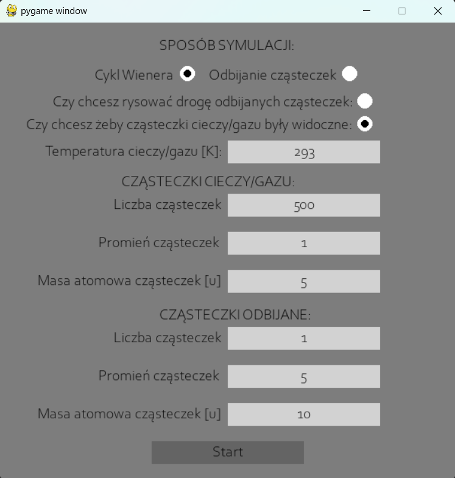

Brownian Motion Simulation
Fizyczna symulacja ruchów Browna oraz Cyklu Wienera
Korzystając z aplikacji można uruchomić symulację Ruchów Browna oraz Cyklu Wienera, a także zdefiniować parametry tych symulacji.
Uruchomienie i konfiguracja
Projekt udostępnia środowisko do symulacji ruchów Browna na podstawie ich matematycznego modelu (Cykl Wienera) oraz modelu fizycznego (zderzeń międzycząsteczkowych). Żeby uruchomić program należy posiadać interpreter Python (najlepiej w wersji 3.10) oraz mieć zainstalowane pakiety z pliku requirements.txt. Następnie w konsoli należy wpisać komendę:
python main.py
Po uruchomienie wyświetli się interfejs, w którym można dostrajać wiele elementów symulacji:

Najpierw należy określić, czy ruch cząsteczek ma się odbywać na podstawie modelu matematycznego (opcja „Cykl Wienera”) czy fizycznego (opcja „Odbijanie cząsteczek”). Nie można wybrać obu opcji naraz. Następnie należy zdecydować, czy każda cząsteczka na zostawiać za sobą ślad (opcja „Czy chcesz rysować drogę odbijanych cząsteczek) oraz czy cząsteczki cieczy/gazu mają być widoczne (opcja „Czy chcesz żeby cząsteczki cieczy były widoczne”). Nie zaleca się aby obu tych opcji używać naraz, ponieważ rysowanie ścieżki cząsteczek cieczy/gazu, ze względu na ich liczbę, całkowicie zamaże ścieżkę badanej cząsteczki.
Po tym, zależnie od wybranego modelu należy uzupełnić dane pola:
- Proces Wienera:
- liczba cząsteczek odbijanych
- promień cząsteczek odbijanych
Reszta pól jest ignorowana
- Odbijanie cząsteczek:
- temperatura cząsteczek
- liczba cząsteczek cieczy/gazu
- promień cząsteczek cieczy/gazy
- masa atomowa cząsteczek cieczy/gazu
- masa atomowa cząsteczek cieczy/gazu
- liczba cząsteczek odbijanych
- promień cząsteczek odbijanych
- masa atomowa cząsteczek odbijanych
Następnie, po naciśnięciu przycisku „Start” powinna rozpocząć się symulacja. Białe cząsteczki to cząsteczki obijane (te, które pokazują ruchy Browna), a niebieskie cząsteczki to cząsteczki cieczy/gazu.
Klikając lewym przyciskiem myszy w dowolne miejsce w symulacji dodajemy do niej nową cząsteczkę odbijaną (białą). Klikając prawym przyciskiem myszy (o ile nie jesteśmy w trybie Cykl Wienera) dodajemy do symulacji cząsteczkę cieczy/gazu (widoczną lub nie). Klikając klawisz „ESC” lub zamykając okno – wracamy z powrotem do interfejsu, w którym możemy zmienić parametry i ponownie uruchomić symuację.
Projekt udostępnia środowisko do symulacji ruchów Browna na podstawie ich matematycznego modelu (Cykl Wienera) oraz modelu fizycznego (zderzeń międzycząsteczkowych). Żeby uruchomić program należy posiadać interpreter Python (najlepiej w wersji 3.10) oraz mieć zainstalowane pakiety z pliku requirements.txt. Następnie w konsoli należy wpisać komendę:
python main.py
Po uruchomienie wyświetli się interfejs, w którym można dostrajać wiele elementów symulacji:
Najpierw należy określić, czy ruch cząsteczek ma się odbywać na podstawie modelu matematycznego (opcja „Cykl Wienera”) czy fizycznego (opcja „Odbijanie cząsteczek”). Nie można wybrać obu opcji naraz. Następnie należy zdecydować, czy każda cząsteczka na zostawiać za sobą ślad (opcja „Czy chcesz rysować drogę odbijanych cząsteczek) oraz czy cząsteczki cieczy/gazu mają być widoczne (opcja „Czy chcesz żeby cząsteczki cieczy były widoczne”). Nie zaleca się aby obu tych opcji używać naraz, ponieważ rysowanie ścieżki cząsteczek cieczy/gazu, ze względu na ich liczbę, całkowicie zamaże ścieżkę badanej cząsteczki. Po tym, zależnie od wybranego modelu należy uzupełnić dane pola:
- Proces Wienera:
- liczba cząsteczek odbijanych
- promień cząsteczek odbijanych
- Odbijanie cząsteczek:
- temperatura cząsteczek
- liczba cząsteczek cieczy/gazu
- promień cząsteczek cieczy/gazy
- masa atomowa cząsteczek cieczy/gazu
- masa atomowa cząsteczek cieczy/gazu
- liczba cząsteczek odbijanych
- promień cząsteczek odbijanych
- masa atomowa cząsteczek odbijanych
Następnie, po naciśnięciu przycisku „Start” powinna rozpocząć się symulacja. Białe cząsteczki to cząsteczki obijane (te, które pokazują ruchy Browna), a niebieskie cząsteczki to cząsteczki cieczy/gazu. Klikając lewym przyciskiem myszy w dowolne miejsce w symulacji dodajemy do niej nową cząsteczkę odbijaną (białą). Klikając prawym przyciskiem myszy (o ile nie jesteśmy w trybie Cykl Wienera) dodajemy do symulacji cząsteczkę cieczy/gazu (widoczną lub nie). Klikając klawisz „ESC” lub zamykając okno – wracamy z powrotem do interfejsu, w którym możemy zmienić parametry i ponownie uruchomić symuację.
Teoria - Ruchy Browna
Ruch polegający na dygotaniu i trzęsieniu się, który odbywają drobne, w silnym powiększeniu jeszcze widzialne cząstki, znajdujące się w stanie zawieszenia w cieczach. Ruchy Browna mogą być obserwowane również w przypadku cząstek zawieszonych w gazach.
Zjawisko to jako pierwszy opisał Jan Ingenhousz, który zaobserwował nieregularne ruchy cząsteczek pyłu węglowego na powierzchni alkoholu. Swoją nazwę zawdzięcza botanikowi Robertowi Brownowi, który obserwował pod mikroskopem zachowanie pyłków roślinnych w wodzie. Drobiny widoczne pod mikroskopem wykonywały nieregularne, zygzakowate ruchy. Brown obserwował takie zachowanie również w przypadku materii nieorganicznej, co obalało tezę o występowaniu tajemniczej „siły życiowej”. Zjawisko ruchów Browna zdawało się przeczyć zasadzie zachowania energii, gdyż ruch ten był niezmienny, niezależnie od tego jak długo trwał.
Eksperymenty prowadzone w kolejnych latach pozwoliły wykluczyć jako potencjalną przyczynę ruchów Browna następujące czynniki:
- obecność prądów w cieczy,
- konwekcję,
- skład chemiczny rozpuszczalnika,
- kształt naczynia,
- pole elektryczne lub magnetyczne.
Zaobserwowane zależności dotyczyły związku zjawiska z temperaturą i wielkością zawieszonych cząsteczek. Wyjaśnienie ruchów Browna nastąpiło dopiero w pracach opublikowanych przez Alberta Einsteina i Mariana Smoluchowskiego. Teorie te zostały zweryfikowane doświadczalnie przez Theodora Svedberga i przez Jean Baptiste Perrina.
Ruch polegający na dygotaniu i trzęsieniu się, który odbywają drobne, w silnym powiększeniu jeszcze widzialne cząstki, znajdujące się w stanie zawieszenia w cieczach. Ruchy Browna mogą być obserwowane również w przypadku cząstek zawieszonych w gazach.
Zjawisko to jako pierwszy opisał Jan Ingenhousz, który zaobserwował nieregularne ruchy cząsteczek pyłu węglowego na powierzchni alkoholu. Swoją nazwę zawdzięcza botanikowi Robertowi Brownowi, który obserwował pod mikroskopem zachowanie pyłków roślinnych w wodzie. Drobiny widoczne pod mikroskopem wykonywały nieregularne, zygzakowate ruchy. Brown obserwował takie zachowanie również w przypadku materii nieorganicznej, co obalało tezę o występowaniu tajemniczej „siły życiowej”. Zjawisko ruchów Browna zdawało się przeczyć zasadzie zachowania energii, gdyż ruch ten był niezmienny, niezależnie od tego jak długo trwał.
Eksperymenty prowadzone w kolejnych latach pozwoliły wykluczyć jako potencjalną przyczynę ruchów Browna następujące czynniki:
- obecność prądów w cieczy,
- konwekcję,
- skład chemiczny rozpuszczalnika,
- kształt naczynia,
- pole elektryczne lub magnetyczne.
Zaobserwowane zależności dotyczyły związku zjawiska z temperaturą i wielkością zawieszonych cząsteczek. Wyjaśnienie ruchów Browna nastąpiło dopiero w pracach opublikowanych przez Alberta Einsteina i Mariana Smoluchowskiego. Teorie te zostały zweryfikowane doświadczalnie przez Theodora Svedberga i przez Jean Baptiste Perrina.
Dokumentacja doxygen
Pełna dokumentacja doxygen dostępna jest tutaj
Pełna dokumentacja doxygen dostępna jest tutaj